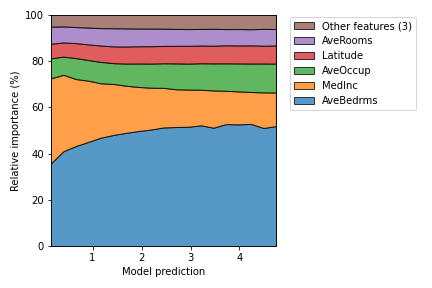
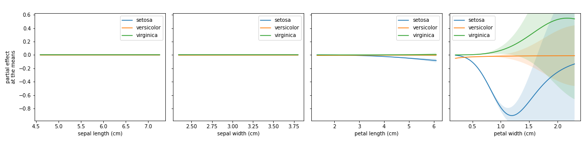

itea.inspection¶
Interaction Transformation expression’s Inspector
Sub-module containing three classes to help inspect and explain the results obtained with the itea.
ITExpr_explainer: Implementations of feature importances methods specific to the Interaction-Transformation representation, and several visualization tools to help interpret the final expression;ITExpr_inspector: Based on a more statistical approach, this class implements methods to measure the quality of the final expression by calculating information between individual terms;ITExpr_texifier: Creation of latex representations of the final expression and its derivatives. In cases where the final expression is simple enough, the analysis of the expression can provide useful insights.
All the modules are designed to work with ITExpr`s. After the evolutionary process is performed (by calling `fit() on the ITEA_classifier or ITEA_regressor), the best final expression can be accessed by itea.bestsol_, and those classes are specialized in different ways of inspecting the final model.
Additionally, there is one class designed to work with the ´`itea``, instead
of ITExpr expressions. The class ITEA_summarizer implements a method
to automatically create a pdf file containing information generated with
all the inspection classes, in an attempt to automate the task of generating
an interpretability report.
Sub-module contents:
ITExpr_explainer¶
- class itea.inspection.ITExpr_explainer(*, itexpr, tfuncs, tfuncs_dx=None)[source]¶
Bases:
objectClass to explain ITExpr expressions.
Constructor method.
- Parameters
itexpr (ITExpr_regressor or ITExpr_classifier) – fitted instance of an
ITExprclass to be explained.tfuncs (dict) – transformations functions. Should always be a dict where the keys are the names of the transformation functions and the values are unary vectorized functions.
tfuncs_dx (dict, default=None) – derivatives of the given transformations functions, the same scheme. When set to None, the itea package will use automatic differentiation through jax to create the derivatives.
- average_partial_effects(X)[source]¶
Feature importance estimation through the Partial Effects method.
This method attributes the importance to the i-th variable by using the mean value of the partial derivative w.r.t. i, evaluated for all data in X.
This method assumes that every feature is continuous.
The partial effect of a given variable for a function
 is
calculated by:
is
calculated by:The IT expression can be automatically differentiated:
where
- Parameters
X (numpy.array of shape (n_samples, n_features)) – data from which we want to extract the feature importances for the predicted outcomes of the model.
- Returns
ape – the importance of each feature of X. for each class found in the given itexpr. If itexpr is an
ITExpr_regressor, then the returned array have shape (1, n_features).- Return type
numpy.array of shape (n_classes, n_features)
Notes
This feature importance measure is based on the paper: “Aldeia, G. & França, F. (2021). Measuring Feature Importance of Symbolic Regression Models GECCO.”
- fit(X, y)[source]¶
Fit method to store the data used in the training of the given itexpr instance.
- Parameters
X (array-like of shape (n_samples, n_features)) – data used to train the itexpr model.
y (array-like of shape (n_samples, )) – target data used to train the itexpr model.
- Returns
self – explainer with a calculated covariance matrix, ready to generate plots and explanations.
- Return type
- Raises
NotFittedError – If the given
itexpris not fitted.KeyError – If not all keys of
tfuncsare contained in the keys oftfuncs_dx.
- plot_feature_importances(X, *, barh_kw=None, ax=None, grouping_threshold=0.05, target=None, importance_method='pe', show=True)[source]¶
Bar plot of the feature importances, that can be calculated with the Partial effects (PE) or Shapley Values (shapley).


- Parameters
X (array-like of shape (n_samples, n_features)) – data to explain.
bar_kw (dict or None, default=None) – dictionary with keywords to be used when generating the plots. When set to None, then
bar_kw= {'alpha':1.0, 'align':'center'}.ax (matplotlib.axes or None, default=None) – axis to generate the plot. If none is given, then a new axis is created. if is a single axis, the plot will be drawn within the given axis.
grouping_threshold (float, default = 0.05) – The features will be iterated in order of importance, from the smallest to the highest importance, and a group of the smallest features that sum up less than the given percentage of importance will be grouped to reduce the plot information. To disable the creation of the group, set
grouping_threshold=0.target (string, int, list[strings], list[ints] or None, default=None) – The targets to be considered when generating the plot for
ITExpr_classifier. If the training data used strings as targets ony, then the target must be a string of a valid class or a list of valid classes. If the training data was encoded as integers, then the target must be an int or a list of integers. This argument is ignored if the itexpr is anITExpr_regressor.importance_method (string, default='pe') – string specifying which method should be used to estimate feature importances. Available methods are:
['pe', 'shapley'].show (bool, default=True) – boolean value indicating if the generated plot should be displayed or not.
- Raises
ValueError – If
axortargethas invalid values.
Notes
This plot is heavily inspired by the bar plot from the SHAP package
- plot_normalized_partial_effects(*, num_points=20, grouping_threshold=0.05, stack_kw=None, ax=None, show=True)[source]¶
Partial effects plots, separing the training data into discrete intervals.
First, the output interval is discretized. Then, for each interval, the partial effect of the sample data that evaluation is within the interval is calculated. Finally, they are normalized in order to make the total contribution by 100%.
- Parameters
num_points (int, default = 20) – the number of points to divide the interval when generating the plots. This is ignored if
itexpr == ITExpr_classifiergrouping_threshold (float, default = 0.05) – The features will be iterated in order of importance, from the smallest to the highest importance, and a group of the smallest features that sum up less than the given percentage of importance will be grouped to reduce the plot information. To disable the creation of the group, set
grouping_threshold=0.stack_kw (dict or None, default=None) – dictionary with keywords to be used when generating the plots. When set to None, then stack_kw is
{'baseline': 'zero', 'labels': labels, 'edgecolor': 'k', 'alpha': 0.75}.ax (matplotlib.axes or None, default=None) – axis to generate the plot. If none is given, then a new axis is created. if is a single axis, the plot will be drawn within the given axis.
show (bool, default=True) – boolean value indicating if the generated plot should be displayed or not.
- Raises
ValueError – If
axhas invalid values.
Notes
This plot was inspired by the relative feature contribution plot reported in the paper: “R. M. Filho, A. Lacerda and G. L. Pappa, “Explaining Symbolic Regression Predictions,” 2020 IEEE Congress on Evolutionary Computation (CEC)”.
- plot_partial_effects_at_means(*, X, features, percentiles=(5, 95), num_points=100, n_cols=3, target=None, line_kw=None, fill_kw=None, ax=None, show_err=True, share_y=True, show=True)[source]¶
Partial effects plots for the given features, when their co-variables are fixed at the mean.
- Parameters
X (numpy.array of shape (n_samples, n_features)) – data from which we want to extract the feature importances for the predicted outcomes of the model.
features (string, list[string], int, list[int] or None, default=None) – the features to generate the plots. It can be a single feature referred to by its label or its index or a list of features.
percentiles (tuple of ints, default=(5, 95)) – the quartiles interval to generate the plot.
num_points (int, default = 100) – the number of points to divide the interval when generating the plots.
n_cols (int, default=3) – number of columns to be used when creating the plot grids if ax is None.
target (string, int, list[strings], list[ints] or None, default=None) – The targets to be considered when generating the plot for
ITExpr_classifier. If the training data used strings as targets ony, then the target must be a string of a valid class or a list of valid classes. If the training data was encoded as integers, then the target must be an int or a list of integers. This argument is ignored if the itexpr is anITExpr_regressor.line_kw (dict or None, default=None) – dictionary with keywords to be used when generating the plots. When set to None, then
line_kw= {}.fill_kw (dict or None, default=None) – dictionary with keywords to be used when generating the plots. When set to None, then
fill_kw= {'alpha' : 0.15}.ax (matplotlib.axes or list of matplotlib.axes or None, default=None) – axis to generate the plot. If none is given, then a new axis is created. If is a single axis, the plot will be drawn within the given axis. If ax is a list, then it must have the same number of elements in
features.show_err (bool, default=True) – boolean variable indicating if the standard error should be plotted.
share_y (bool, default True) – boolean variable to specify if the axis should have the same interval on the y axis.
show (bool, default=True) – boolean value indicating if the generated plot should be displayed or not.
- Raises
ValueError – If
axortargethas invalid values.IndexError – If one or more specified features are not in
explainer.itexprlabels.
Notes
This plot is heavily inspired by the Partial Dependency Plot from scikit-learn.
- selected_features(idx=False)[source]¶
Method to identify if any of the original features were left out of the IT expression during the evolution of the exponents’ array.
- Parameters
idx (bool, default=False) – boolean variable specifying if the method should return a list with the labels of the features or their indexes.
- Returns
selected – array containing the labels of the features that are present in the model, or their indexes if
idx=True.- Return type
array of shape (n_selected_features)
- shapley_values(X)[source]¶
Feature importance estimation through approximation of the shapley values with the gradient information.
The shapley values come from the coalitional game theory and were proposed as a feature importance measures by Scott Lundberg in “Scott M. Lundberg and Su-In Lee. 2017. A unified approach to interpreting model predictions. NIPS”. The equation:
where
 is the set of variables, is the
contribution of the set , the difference between the
prediction when we fix the values of , and the expected
prediction.
is the set of variables, is the
contribution of the set , the difference between the
prediction when we fix the values of , and the expected
prediction.It is possible to approximate these values by the equation:
Where is the partial effect w.r.t .
- Parameters
X (numpy.array of shape (n_samples, n_features)) – data from which we want to extract the feature importances for the predicted outcomes of the model.
- Returns
shapley_values – the importance of each feature of X.
- Return type
numpy.array of shape (n_features, )
Notes
The shapley values are described and explained in: “Scott M. Lundberg and Su-In Lee. 2017. A unified approach to interpreting model predictions. NIPS”
The approximation of shapley values by means of the partial effect was studied in the paper: This feature importance measure is based on the paper: “Aldeia, G. & França, F. (2021). Measuring Feature Importance of Symbolic Regression Models GECCO.”
ITExpr_inspector¶
- class itea.inspection.ITExpr_inspector(*, itexpr, tfuncs, decimal_places=3)[source]¶
Bases:
objectclass ITExpr_inspector.
Based on a more statistical approach, this class implements methods to measure the quality of the final expression by calculating information between individual terms.
Constructor method.
- Parameters
itexpr (ITExpr_regressor or ITExpr_classifier) – fitted instance of an
ITExprclass to be explained.tfuncs (dict) – transformations functions. Should always be a dict where the keys are the names of the transformation functions and the values are unary vectorized functions.
- fit(X, y)[source]¶
Fit method to store the data used in the training of the given itexpr instance.
- Parameters
X (array-like of shape (n_samples, n_features)) – data used to train the itexpr model.
y (array-like of shape (n_samples, )) – target data used to train the itexpr model.
- Returns
self – inspector with the calculated covariance matrix.
- Return type
- terms_analysis()[source]¶
Method to calculate different metrics for the terms composing the IT expression.
- Returns
analysis – returns a dictionary containing several term information and metrics calculated for each term:
coef: coefficient of each term (or coefficients, if the itexpr is an instance of
ITExpr_classifier);func: transformation function of each term;
strengths: the exponents of each term;
coef stderr.: the standard error of the coefficients;
mean pairwise disentanglement: the mean disentanglement between each term when compared with the others;
mean mutual information: the mean continuous mutual information between each term when compared with the others;
prediction var.: the variance of the predicted outcomes for each term when predicting the training data.
- Return type
dict
ITExpr_texifier¶
- class itea.inspection.ITExpr_texifier[source]¶
Bases:
objectclass containing static methods to create LaTeX representations of the expression.
- static derivatives_to_latex(itexpr, term_separator=' + ', term_wrapper=None)[source]¶
Static method that takes an instance of an
ITExprand returns a list containing a latex representation of each partial derivative of the expression.- Parameters
itexpr (ITExpr_classifier or ITExpr_regressor) – an instance of itexpr to be texified.
term_separator (string, default=' + ') – string to be used to concatenate each term.
term_wrapper (None or Callable, default=None) –
a function that takes two arguments:
ithe index of the term andtermthe term itself, and returns a string. This can be used to add special formatations to the terms. Examples are:lambda i, term: r'\underbrace{'+term+r'} _{\text{term '+str(i)+'}}'to add a underbracket with the index of the term;lambda i, term: termto do nothing;
When set to None, then the latter expression will be used.
- Returns
itexpr_latexs – list of strings, where each string is a latex representation of the partial derivative of the given itexpr.
- Return type
list[string]
- static to_latex(itexpr, term_separator=' + ', term_wrapper=None)[source]¶
Static method that takes an instance of an
ITExprand returns a latex representation of the expression.- Parameters
itexpr (ITExpr_classifier or ITExpr_regressor) – an instance of itexpr to be texified.
term_separator (string, default=' + ') – string to be used to concatenate each term.
term_wrapper (None or Callable, default=None) –
a function that takes two arguments:
ithe index of the term andtermthe term itself, and returns a string. This can be used to add special formatting to the terms. Examples are:lambda i, term: r'\underbrace{'+term+r'} _{\text{term '+str(i)+'}}'to add a underbracket with the index of the term;lambda i, term: termto do nothing;
When set to None, then the latter expression will be used.
- Returns
itexpr_latex – latex expression representing the given itexpr.
- Return type
string
ITEA_summarizer¶
- class itea.inspection.ITEA_summarizer(*, itea)[source]¶
Bases:
objectClass to automatically generate a pdf file reporting several interpretability plots for the expression.
Constructor method.
- Parameters
itea (ITEA_classifier or ITEA_regressor) – fitted instance of an
ITEAclass to be summarized.
- autoreport(save_path='.', name_suffix='', use_temp_folder=True)[source]¶
automatically generate a pdf using the methods implemented in
ITExpr_inspector,ITExpr_explainer, andITExpr_texifier.The idea is to simplify the generation of the plots and tables, taking from the user the need to understand, instantiate the classes and call the plots functions.
This method makes usage of the
PyLaTeXpackage and requires a visible latex installation to work properly.The .tex file used to generate the pdf will also be saved on the designed path.
You can download one example of report
by clicking here.- Parameters
save_path (string, default='.') – path to save the pdf report. The file will be saved as “Report.pdf”, unless a
name_suffixis provided. A Tename_suffix (string, default="") – suffix to add in the name of the report.
use_temp_folder (boolean, defaut=True) – specifies if a temporary folder should be used to save the plots during the creation of the report. If false, then the plots will be saved on the
save_path.
- fit(X, y)[source]¶
Fit method to store the data used in the training of the given itea instance.
- Parameters
X (array-like of shape (n_samples, n_features)) – data used to train the itexpr model.
y (array-like of shape (n_samples, )) – target data used to train the itexpr model.
- Returns
self
- Return type
- plot_convergence(*, data=None, n_cols=1, line_kw=None, fill_kw=None, ax=None, show_err=True, show=True)[source]¶
Plot of information about the
iteaevolutionary process. This function is intended to help visualize the information on theitea.convergence_dictionary.- Parameters
data (string, list of string, or None, default=None) – the convergence information to generate the plots. It can be a single string or a list with strings in
['fitness', 'n_terms', 'complexity']. If set to none, then the whole list of strings will be used.n_cols (int, default=1) – number of columns to be used when creating the plot grids if ax is None.
line_kw (dict or None, default=None) – dictionary with keywords to be used when generating the plots. When set to None, then
line_kw= {}.fill_kw (dict or None, default=None) – dictionary with keywords to be used when generating the plots. When set to None, then
fill_kw= {'alpha' : 0.15}.ax (matplotlib.axes or list of matplotlib.axes or None, default=None) – axis to generate the plot. If none is given, then a new axis is created. If is a single axis, the plot will be drawn within the given axis. If ax is a list, then it must have the same number of elements in
data.show_err (bool, default=True) – boolean variable indicating if the standard error should be plotted.
show (bool, default=True) – boolean value indicating if the generated plot should be displayed or not.
- Raises
ValueError – If
axordatahas invalid values.